|
Nonstandard equipment
Besides standard equipment,
which you can buy in a store
on any planet, there are also in the game useful nonstandard and unique items
(artifacts). You can get them in black holes or as an award for
completing a government mission, liberation of systems.
 |
Antigravitazer is a device that creates
a bubble with negative kinetics pumped in around the ship, as described by Gnook-Einstein.
As a result the weight and volume constants inside the bubble would curve decreasing the
actual weight of the ship.
|
 |
Arms is a fixed set for a quick
for quick re-equipping of the defense field generator slot. Includes universal connectors
for a pair of weapon turrets. If the defense field generator is not installed or out
of order, the artifact doesn't work.
|
 |
Artifactor is an adaptor for connection of
artifacts. Its scheme uses the principle of crystal signal inversion,
which allows to connect three artifacts instead of one droid. Allows several other artifacts to work straight from ship's hold. Doesn't work, if the droid slot is unavailable in the ship hull.
|
 |
Bioworld is a biosensor analyzer, serving to detect hazardous viruses and microorganisms. If any hazard is detected the light indicator will starts flashing. It displays the validity of stimulants and the terms of duration of diseases, increasing the player's immunity.
|
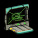 |
Probability analyzer Calculates and shows the probability of winning the battle against any enemy. The device is installed into the ship's board computer. Allows to forecast the invasions of dominators into the peaceful systems. It allows to determine the approximate value of treasures hidden on the uninhabited planets. When a scanner cache and a scanner are available, it helps to find out, what kind of artifact would drop out of a spaceship in the hyper-space, if this ship is the last one to be destroyed.
|
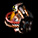 |
Zing is an experimental cyborg
with an intellectual matrix of a zing (gaalian insect). The cyborg fully replicates
the behavior of the actual insect, namely egg-laying. The eggs of the cyborg however are
thermal charges that he lays into fragment shells, thus increasing their power. Besides damage, each charge bears a powerful thermal hit, which leads to the over-heating of enemy engines and respectively to a speed decrease.
|
 |
Hypergenerator is a unique supplement to the engine. Generates a low-frequency impulse, causing space fluctuations and moving the ship into a hyper-tunnel. This allows to make jumps up to 40 parsec regardless of the engine characteristics. Has a large wear index. In addition decreases the time expenses for making a jump.
|
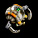 |
Droid Junior is a light version
of the main droid, connected to the common cable via a special synchronization
system. It works together with the main droid thus increasing the speed of repair
works on ship. It is able to work even in the hyper-space. If the droid isn't mounted or damaged, the artifact is idle in space. In hyper-space works always.
|
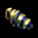 |
Iron zoopie settle down on the ship hull
and after you feed them with a nutrition solution, they start emitting zoopinum a special
substance, providing the hull covering with strength and flexibility. The colony of zoopie
is governed and renewed by the efforts of a zoopie queen.
|
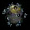 |
Quark bomb is an extremely expensive
device, staffed with a payload of enormously destructive power. You should cast away the bomb
from your ship, fly at the max. distance away from it and destroy it with a shot. It is extremely
efficient against large aggregates of dominators.
|
 |
Blast wave localizer - in case of a lucky hit
it rejects the energy to the outer surface of the enemy ship,
so that a possible explosion would result in minor damage for the equipment.
|
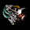 |
On-Screw is a mini-plant, which performs
technical upgrading of charges. Placed over the weapon's lock, it changes the power
of a charge by integration of a splitter element. Thanks to it the killing power of frag weapons grows. Simple in use:
doesn't require additional power sources and doesn't overheat.
|
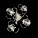 |
Nanitoids are intellectual
miniature robots. With the help of their unique program they are capable
of repairing even items, they are unfamiliar with. They constantly self-educate and upgrade.
|
 |
Oblivion connector is several
thousand of kelleroid nanomodules, built into a special network. The network is distributed
over the engine surface and would restore its walls in case of wearout, thus prolonging the engine operation life in the boost mode.
|
 |
Frostix are super-cold bacteria.
They can live on any warm surface. When a colony of those is placed onto an engine,
they try their best to cool it down, thus stabilizing the ship speed in the heat of a battle.
|
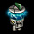 |
Polarizer is a unique device,
a source of highly active subatomic systems, which interact with the defense field
and strengthen it. With low probability reflects the inflicted damage back into the enemy. Runs idle, if the defense field generator isn't mounted or out of order.
|
 |
Swallower is a retractable mechanical
energy absorbent, which consumes high amount of energy. The best use is to adjust it -
to the defense field generator housing. The device absorbs hits of the energy
weapons, reducing the effect to zero.
|
 |
Prolonger is usually mounted to the radar. It
amplifies and decodes the signals, coming from distant objects, thus increasing the effective range of the radar.
Helps to receive the information about ships in the distant systems. If there is a powerful scanner available on your ship, the device will determine the classes of ships. If a radar isn't mounted or out of order, the artifact is idle.
|
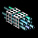 |
Proportionar is switched to the hull
energy system controller. It routes the energy flows in such way that some part
of energy gets redirected from the defense field into the power
generators of the energy weapons. Such system allows to increase the combat power
thanks to the defense.
|
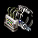 |
Proton is an supplement to the energy
block. It is in-built into the distribution mechanism of the defense field energy, and activates
an additional slot for the weapon turret using this energy.
|
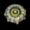 |
Matter psi-accelerator, using its own
powerful intellect the psi-accelerator provides that the engine uses the physical laws
of the psy-space. Implementing some of these laws, the engine significantly increases
the speed.
|
 |
Fiver is a powerful energy
module used for charge accumulation. It interacts with the combat impulse generator
and accumulates a charge. As soon as the critical power is reached, the charge unites
with the outcoming shot and generates an all-powerful hit.
|
|
Rocketang is a system of nanomechanisms,
which cover the hull surface with a thin layer of controllable plasma-uritane film.
Their unicity is that they determine the exact spot of the projectile hit and instantly reinforce
the armor in this place. It allows to delete all your missiles upon a command.
|
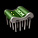 |
Scanner cache is a software amplifier of scanner computing capacity. This device helps increase the speed of algorithm decoding with the help of signal caching in the real-time mode. Has its own buffer, where it builds up a database of already decoded signals. It expands the volume of information received about the ships. The ship's short info window includes additional information about the droid power, total damage inflicted, as well as pilot's accuracy and maneuverability skills. When hover over a missile (torpedo), it shows its speed and damage. In the hyper-space it shows the health of enemies. When a probability analyzer is mounted, it also shows, which artifact drops down from a ship in the hyper-space, if it is the last to be destroyed.
If a scanner is not mounted or out of order, the scanner cache is idle.
|
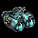 |
Nozzlenator is a self-extracting
set of additional nozzles, which are engaged thanks to two unused weapons slots.
Thanks to the better release of power into the space
the ship speed grows.
|
|
Subportal is a self-extracting
disposable multiplier of the antimatter. Increases the critical mass of the antimatter before the black hole birth. Self-absorbs after use.
|
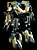 |
Tranclucator is a unique autonomous
device designed to protect its host. When he gets injected into the space,
the tranclucator activates and start monitoring the events, which happen around.
If the host is in danger in tranclucator's opinion, it hails all its fire power upon
the enemy. The hosts of such devices are dare-devils, since the tranclucator
never fails.
|
 |
Transfactor beacon is a remote system
of object studying. When activated it transmits into the hyper-system square-undulated signal about a large amount of unstudied material. Kelleroids, which caught this signal, set it to the maximal priority and fly over to the place of call. The signal power
determines the amount of exploring robots. The signal can be intermitted by other
dominators.
|
 |
Black guck is a mixture that was synthesized
by the scholars of the ancient times. The recipe of the black guck was lost long time ago,
however there are still several portions of this substance in the galaxy. Placed into the fuel
tank, the guck acts as a catalyst - the amount of the fuel gradually increases.
|
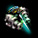 |
Erimeter focuses the gripper beam,
thanks to it its directivity narrows down increasing the performance efficiency. As a result
the gripper beam can pull in objects that are heavier than the maximum calculated mass.
|
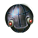 |
a`Egis destroys missiles and torpedoes located in the engagement zone by the aimed impulses, which cause failures in their guidance systems and which result in to the self-explosion of the combat part.
|
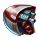 |
Rals is a beta-version of firmware, designed to speed up fire rate of rocket weaponry. It's allowing to fire two times faster due to rewritten software algorithms.
|
|